GLICD
Définir l'application par défaut par l'utilisateur :
Le site Xfce.
Sur Debian avec le bureau Xfce, les applications sont définies automatiquement en fonction du fichier à ouvrir.
Mais l'utilisateur a la possibilité d'ouvrir un fichier avec une autre application que celle définie automatiquement.
En définissant une application par défaut par l'utilisateur, celle-ci sera toujours appliquée.
En cas de nouveau choix d'application, pour retrouver l'application définie automatiquement, il faudra la sélectionner à nouveau.
Exemple : Définir l'application « Parole » par défaut par l'utilisateur pour les fichiers de musique « .mp3 ».
- Ouvrir le gestionnaire de fichiers : Simple clic > Applications > Gestionnaire de fichiers
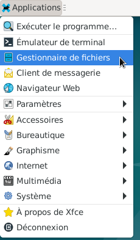
- Le gestionnaire de fichiers Thunar s'ouvre.
Ici, debian (nom utilisateur) doit être en bleu.
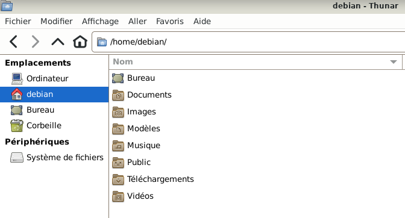
- Double clic > Musique
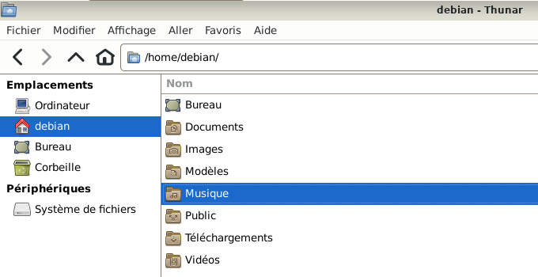
- Clic droit sur le fichier à ouvrir « chanson.mp3 », un menu déroulant apparaît.
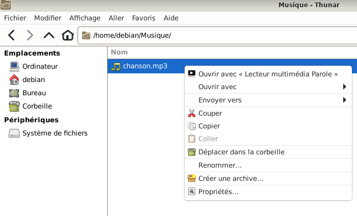
- Dans cet exemple, l'application « Parole » est l'application définie automatiquement.
Mais elle n'est pas définie par défaut par l'utilisateur
- Positionner le pointeur de la souris sur « Ouvrir avec »
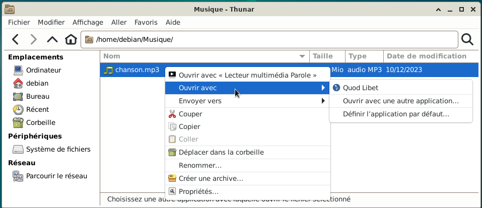
- Un menu déroulant apparaît avec des propositions.
Simple clic > Définir l'application par défaut...
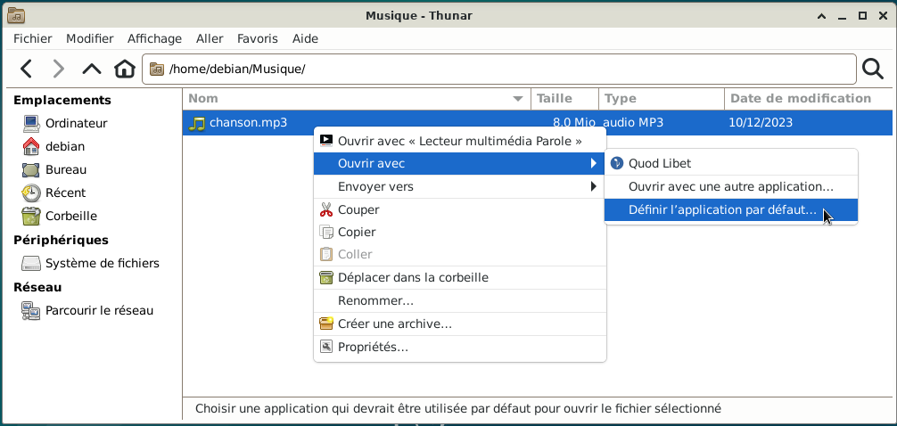
- Une fenêtre s'ouvre :
- Application par défaut : C'est l'application définie automatiquement lors de l'installation.
- Applications recommandées : Ce sont les applications compatibles pour ouvrir correctement le fichier.
Si besoin, choisir une application qui se trouve dans Applications recommandées.
- Autres applications : Ce sont toutes les autres applications qui se trouvent sur le PC.
En général, il n'y a pas besoin d'aller dans cette section.
Les applications risquent de ne pas être compatibles avec le fichier à ouvrir.
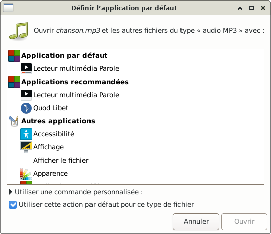
- Simple clic > Lecteur multimédia Parole
En bas de la fenêtre, cocher « Utiliser cette action par défaut pour ce type de fichier ».
Nota :
L'application « Quod Libet » aurait pu être choisie puisqu'elle est dans Applications recommandées.
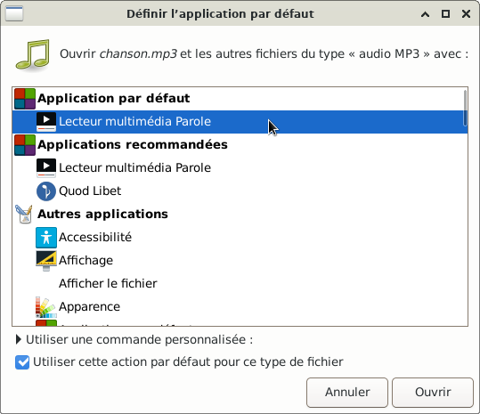
- Le bouton « Ouvrir » n'est plus grisé
Simple clic > Ouvrir
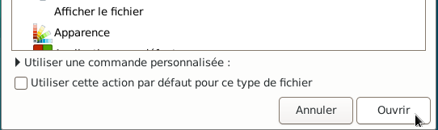
- Le lecteur multimédia Parole s'ouvre
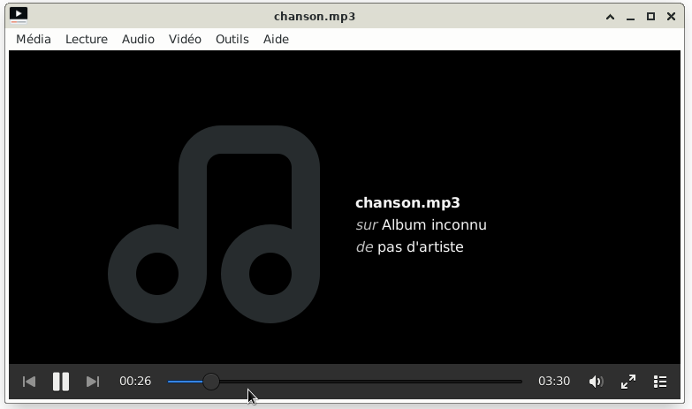
- Quitter l'application « Parole »
Simple clic > Media > Quitter
- Vérifier si l'application a bien été définie par défaut par l'utilisateur
Simple clic > Applications > Paramètres > Gestionnaire de paramètres
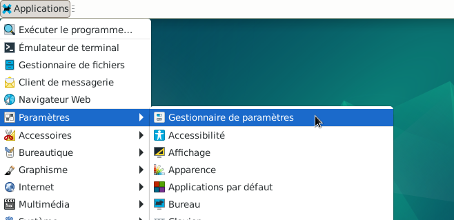
- La fenêtre du gestionnaire de paramètres s'ouvre.
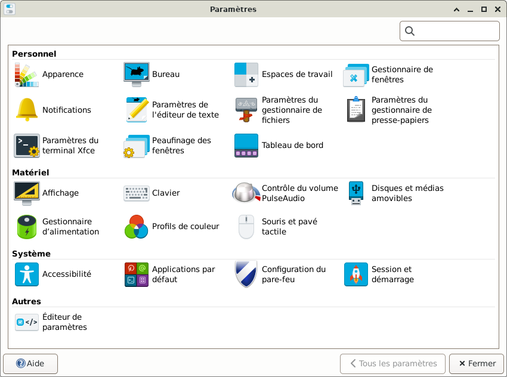
- Positionner le pointeur de la souris sur « Applications par défaut »
Simple clic > Applications par défaut
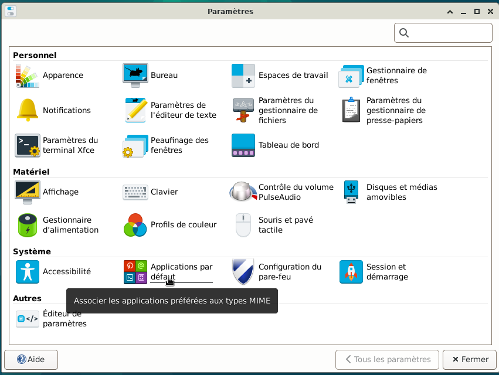
- La fenêtre « Applications par défaut » s'ouvre
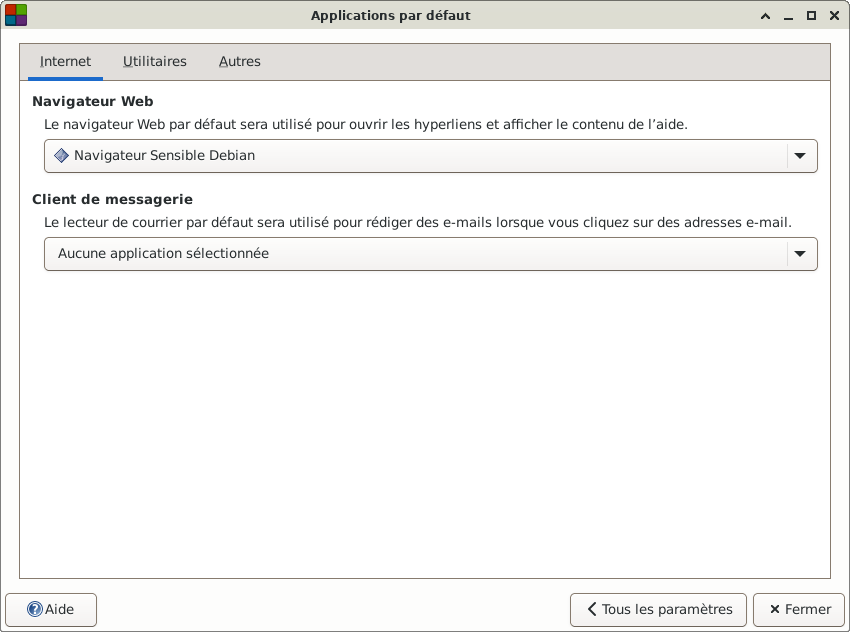
- Positionner le pointeur de la souris sur « Autres »
Simple clic > Autres
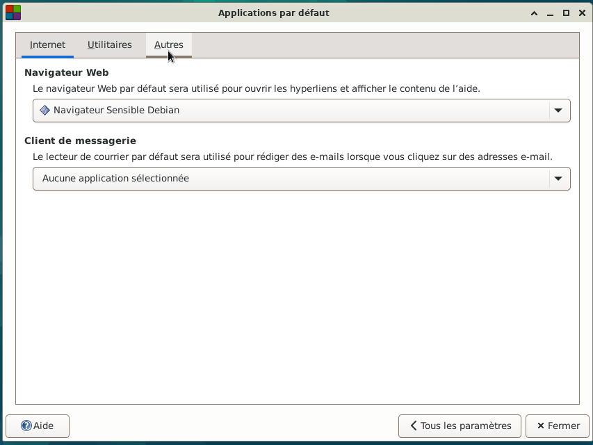
- Un menu apparaît
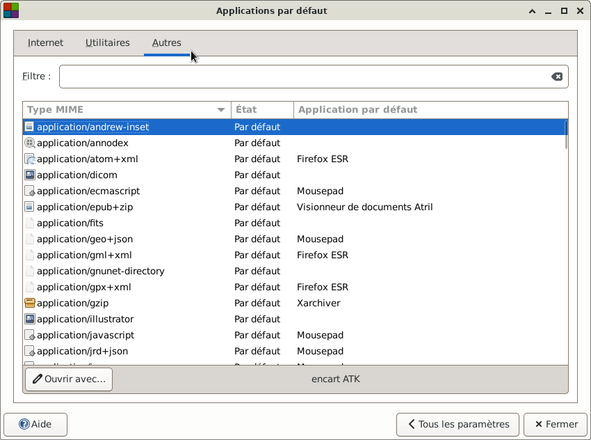
- Positionner le pointeur de la souris sur « Etat »
Simple clic > Etat
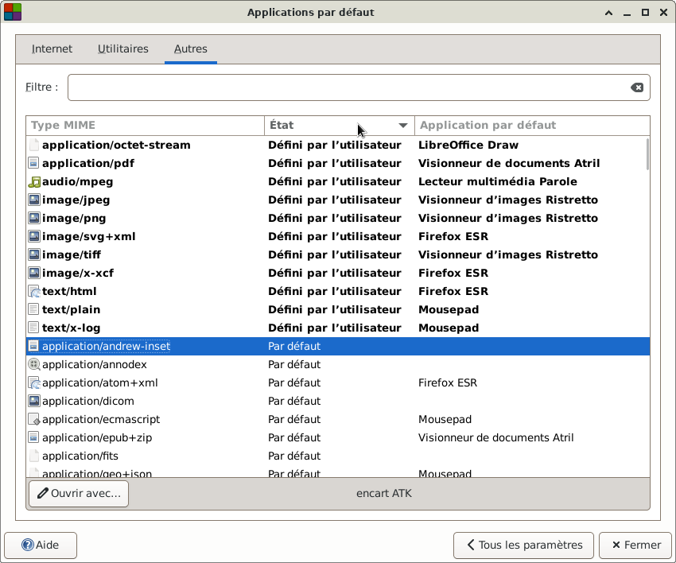
- Les lignes qui sont inscrites en gras ont été définies par défaut par l'utilisateur.
Les lignes qui ne sont pas en gras ont été définies automatiquement lors de l'installation.
- Résultat de la procédure qui a été faite ci-dessus :
Positionner le pointeur de la souris sur « audio/mpeg »
Simple clic > audio/mpeg
« audio/mpeg » est maintenant surligné en bleu. Il est bien défini par l'utilisateur
« audio MP3 » est indiqué dans le bandeau du bas
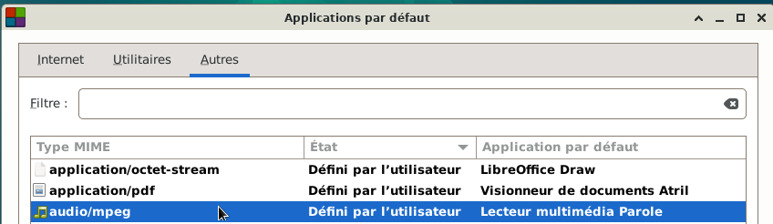
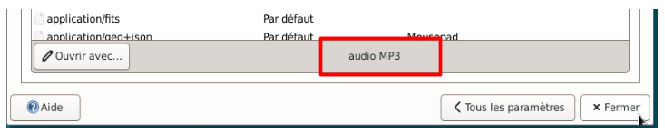
- Résultat, c'est l'application « Parole » qui sera toujours ouverte par défaut.
La procédure reste la même avec n'importe quel fichier pour définir par défaut l'application choisie par l'utilisateur.
Cette procédure est à faire qu'une seule fois.
- Toutes les applications peuvent être définies par défaut par l'utilisateur dans cette fenêtre.
Avec le bouton « Ouvrir avec... »
- Fermer la fenêtre des applications par défaut
Simple clic > Fermer
Nota : L'utilisateur peut ouvrir un fichier musique avec une autre application.
Si besoin, se rendre au chapitre :
Gestionnaire de fichiers avec Thunar : Ouvrir un fichier > Ouvrir avec une
autre application

Retour
Informations sur le logiciel libre et
Merci.
Marques déposées :
Ce site ne fait pas partie de Debian, n'est pas produit par le projet
Debian, ni approuvé par le projet Debian.
Ce site n'est pas affilié à Debian. Debian est une marque déposée appartenant
à Software in the Public Interest, Inc.
Contribuer :
Ce site ne fait pas partie de XFCE, n'est pas produit par le projet
XFCE, ni approuvé par le projet XFCE.
Ce site n'est pas affilié à XFCE.
Ce site est juste réalisé par un passionné.